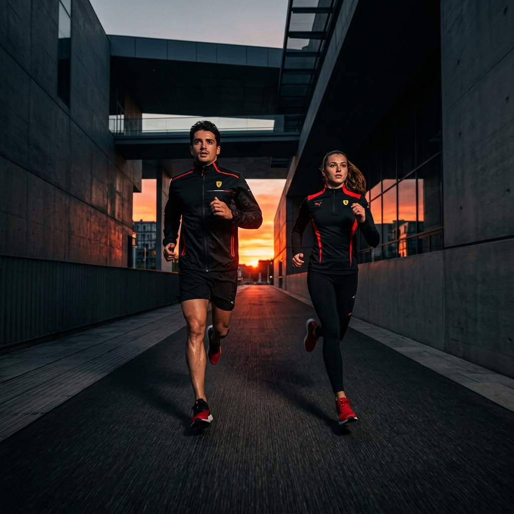
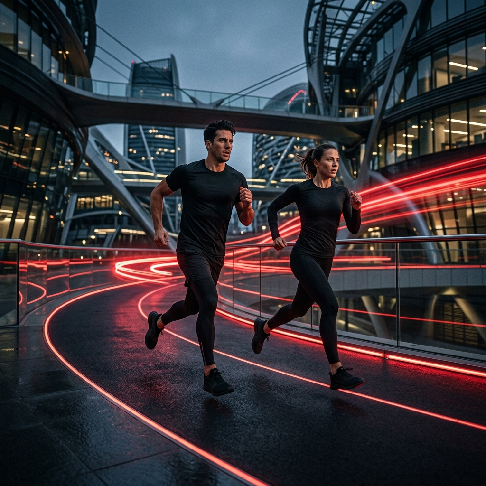
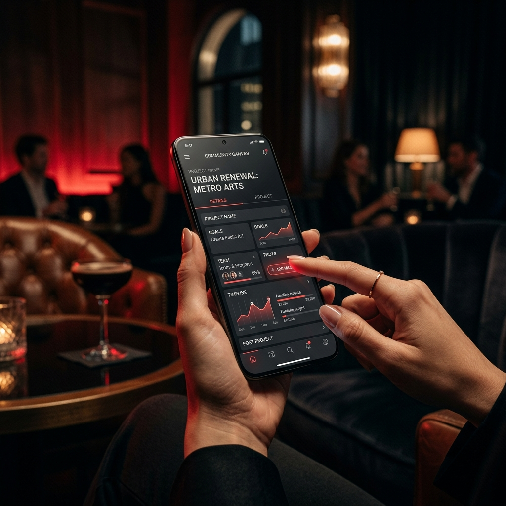

TRANSFORMANDO O MUNDO.
UM VOLUNTÁRIO POR VEZ.
Um hub de transformação social que conecta duplas de amigos para 4 horas mensais de voluntariado — com formação digital e impacto mensurável.
CONHEÇA A FÓRMULA ↗O QUE É O 2DOE4 HUB?
Um ecossistema híbrido de transformação social que une esporte, educação digital e geração de renda solidária.
PILARES PARA FUTUROS LÍDERES SOCIAIS
Três trilhas de impacto real, criadas para quem quer transformar comunidades com inovação e afeto.

ESPORTE
Eventos e experiências esportivas. Inovação com afeto nas arenas onde a competição encontra a causa social.

EDUCAÇÃO DIGITAL
Formação de criadores de conteúdo UGC. 100% pelo celular, presença digital para projetos sociais.
RENDA SOLIDÁRIA
Campanhas estruturadas que geram recursos e sustentabilidade para projetos sociais reais.
GPTDOABEM
Laboratório Social de IA que transforma voluntários em criadores de conteúdo digital. Formação 100% pelo celular com inteligência artificial como aliada.
- Formação em criação de conteúdo UGC
- 100% Mobile — aprenda pelo celular
- Presença digital para projetos sociais
- Certificação de Creator Solidário
COMO FUNCIONA
Uma jornada simples para gerar impacto real. Do cadastro à ação em 5 passos.
Cadastro
Empresas, Universidades e Projetos adotam o movimento.
Match
Duplas via algoritmo inteligente ou amigos diretos.
Escolha
Trilha Esportiva, Digital ou Causa da Região.
Ação
4 horas mensais de voluntariado e impacto real.
Registro
Validação via app e registro de impacto mensurável.
GAMIFICAÇÃO & RECONHECIMENTO
O sistema Le Mans Social transforma horas de voluntariado em conquistas reais.
Resistência
Certificado Digital 2Doe4 para a dupla.
Endurance
Selo exclusivo no LinkedIn e Atleta Social.
Le Mans Social
Troféu físico e experiência disruptiva de imersão social.
Creator Solidário
Badge de Criador Digital Certificado.
CAMPANHAS DOABEM
Projetos reais com metas de impacto mensuráveis e transparência total.
#CURADOABEM — Piloto
Alianças pela Saúde — Brotas, Jaú e Região. Em parceria com Hospital Santa Therezinha.
- 3.600 Atendimentos anuais
- 30% Redução de reinternações
- 20% Redução de amputações evitáveis
CHEGA DE VOLUNTÁRIO REBORN
Lançamento Abril 2026. Ativando o exército do voluntariado digital por recompensas. Renda revertida integralmente ao #CURADOABEM.
RANKING SOLIDÁRIO
As duplas com maior impacto acumulado no 2Doe4 HUB.
| Posição | Dupla Atleta | Total Horas | Status |
|---|---|---|---|
| 01 | Ana & Mateus | 48H | Maratona |
| 02 | Roberto & Carla | 36H | Endurance |
| 03 | Luiz & Julia | 28H | Endurance |
O MANIFESTO
"Ninguém muda o mundo sozinho. Mas dois amigos, doando 4 horas, despertam o gigante da solidariedade brasileira."